This part of the guide will describe the functions of the kX Mixer application.
If you would like to know more information
about parts of the mixer, read the kX Helpfile.
Note for all channel sliders:
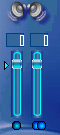 
The boxes containing the numbers show volume in dB
The sliders control the volume level
The arrow on the left hand side resets volume to "0"
The small circe on the bottom left mutes and unmutes the channel (blue=
un-muted, gray= muted)
The pair of circles on the bottom right selects whether the stereo pair of
sliders operated together, ie move one slider, the other moves as well.
(both
blue = operated together, one gray= operated seperately) Note this option
is only available for stereo channels
Front Page
Surrounder Window
Ins & Outs Page
Record Page
AC-97 Page
Effects Page
Soundfont Page
Analyzer/Peak Metre Page
kX DSP Window
kX Router Window
kX Automation Window
Speaker Test Window
Front Page
The first view we have when the mixer is opened is this one.
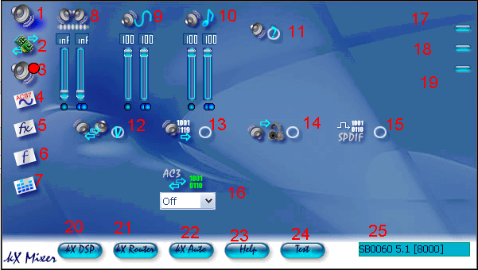
Page select:
1. This button will take us back to this page when we are in another page.
2.This
button will take us to the Inputs and Outputs Page.
3. This button will
take us to the Recording Page.
4. This button will take us to the AC-97
Page.
5. This button will take us to the Effects Page.
6. This button will
take us to the Soundfont Page.
7. This button will take us to the Analyzer/Peak
Metre Page.
Level Control
8. This slider controls the master volume.
9. This slider
controls the volume of all Wave sounds, ie music from Winamp.
10. This
slider controls Soundfont Volume.
Options
11. This button opens up the Speaker
setup window.
12*. This option selects whether front and rear physical outputs
are swapped. (see here for
reason.
13*.
This option selects whether the card is in Digital Output Only mode (With analog
outputs turned off).
14*. Selects whether the headphones will be routed sub/centre
output (Wave 8/9).
15*.
This options selects whether the card is in S/PDIF passthrough mode, ie the
card does not process SP/DIF streams.
16*. This option selects which S/PDIF
output is in AC-3 Passthrough mode, ie to an external Dolby Digital Decoder.
Program Controls
17. This button closes the mixer.
18. This button minimizes the mixer.
19. This button shows information on
the current version of the kX Drivers.
Windows
20. This button opens the DSP window.
21. This button
opens the router window.
22.This button opens the automation window.
23.
This button opens the kX Helpfile.
24. This button opens the Speaker test
window.
25. This shows the model of the soundcard you are using. (If more
than one compatible soundcard is used, it selects which sound card the mixer
is controlling).
*Note: Not all functions are available and work on some cards.
Surrounder Window
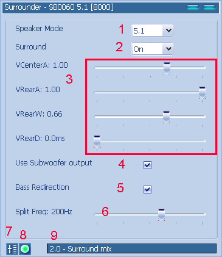
1. Sets the speaker setup for kX to use.
2. Turns the surround outputs on (rear,LFE,centre).
3. Surround Settings.
4. Turns LFE output on.
5. Redirects bass audio from current play and sends to LFE.
6. Chooses the frequency at which to start sending to LFE.
7. Resets the Surrounder Window .
8. Mutes output
9. Drop-down list of presets
Top Index
Ins and Outs Page

Outputs
1.
Front Speaker Volume
2. Rear Speaker Volume
3*. Centre Speaker Volume
4*. LFE Speaker Volume
5. Generic S/PDIF Volume
6*.
Headphones Volume
7. S/PDIF1 VolumeInputs
8. AC-97 Level
9*. CD S/PDIF Level
10*. I2S(Inter IC Sound) Level
11*.
Unknown Level
12*. Line-In/Mic 2 Level
13*. Coax/Optical SP/DIF In
14*. Aux 2 In
*Note these channels require hardware support, ie Live! 5.1, Live! Drive
etc
Top Index
Record Window
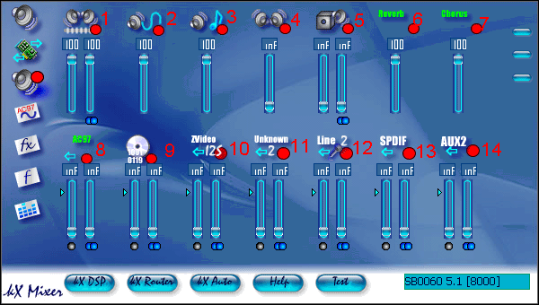
1. Master Record Level
2. Wave Record
Level(This is what you hear, and I strongly recommend you mute this)
3.
Soundfont Record Level
4. Rear Channel (6/7) Record Level (I recommend
you mute this)
5*. LFE/Centre Record Level (I recommend you mute this)
6.
Reverb Effect Record - Use this if you wish to record the reverb effect signal)
7. Chorus Effect Record - Use this if you wish to record the chorus effect
signal)
8. AC-97 Record Level (If you are using onboard inputs (mic,line
in etc) set the to "0"dB and unmute)
9*. CD S/PDIF record level
10*.
I2S in Record Level
11*. Unknown Record Level
12*. Line In2/Mic2 Record
Level
13*. Coax/Optical S/PDIF Record Level
14*. Aux2 Record Level
*Note these channels require hardware support, ie Live! 5.1, Live! Drive
etc
Top Index
AC-97 Page
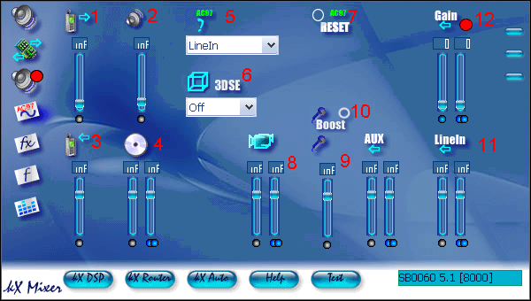
1. TAD (Telephone Answering Device) Out Level
2. PC Speaker Level
3. TAD (Telephone Answering Device) In Level
4. Analog CD Audio Level
5.
Recording Source (Sends the signal from this to the record page)
6. 3D Stereo
Enhancement (Has 4 settings, Low,Med,High,Off)
7. Reset page to default
settings
8. Video Sound In Level
9. Microphone Level
10. Mic Boost (Amplifies mic signal by 20dB)
11.
Line In Level
12. AC-97 Gain (Amplifies all AC-97 signals)
Top Index
Effects Page
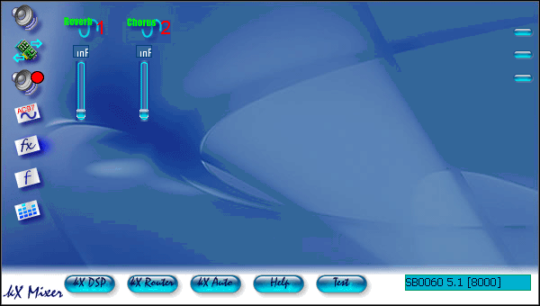
1. Amount of reverb effect added to audio playing (Only with default DSP settings)
2. Amount of chorus effect added to audio playing (Only with default DSP settings)
Top Index
Soundfont Page
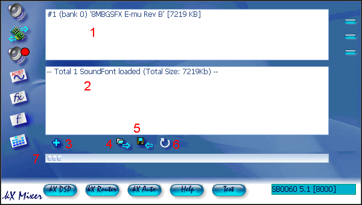
1. Shows soundfont backs loaded
2. Provides information on loaded soundfonts
3. Opens browse dialog, to
load soundfonts
4. Loads soundfont profile
5. Saves soundfont profile
6.
Unloads all soundfonts
7. Shows memory used by soundfonts
Top Index
Analyzer/Peakmetre Page
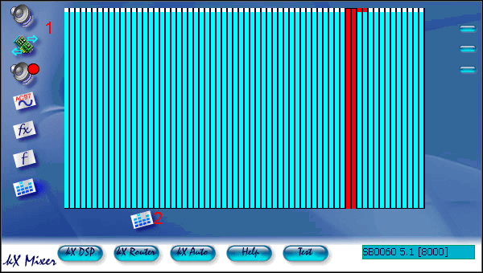
1. Shows active channels (Blue = Synth, Red = Wave, Green = ASIO)
2. This button opens the Peak Metre
Peak Metre Window
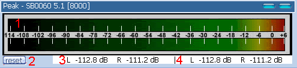
1. Shows the level of the Front Channel (Wave 4/5)
2. Resets Counters
3.
Counter Showing Current Level
4. Counter Showing Highest Level
Top Index
kX DSP Window

This window is where all the advanced
routing of inputs, outputs and effects is done. More information here.
Top Index
kX Router Window

This windows is where the generated
audio (Wave from Winamp, Soundfonts or ASIO outputs) is routed to the FXBus
in the DSP for effects and processing.
Top Index
kX Automation Window
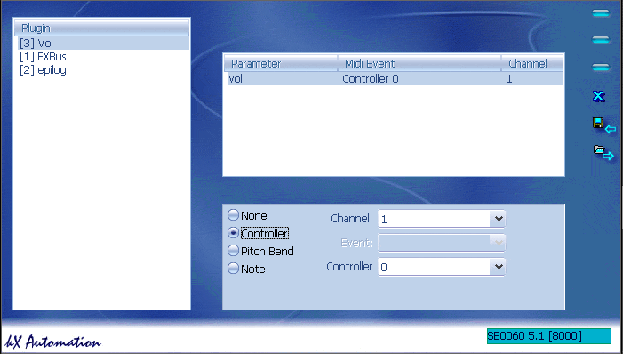
This windows is where you can set midi
control values for modules in the DSP, for control in VST host sequencers
when using the kX VSTi plugin.
Top Index
Speaker Test Window
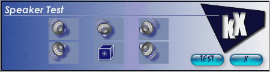
This window is the speaker test, clicking
on the icon of the speaker will emit a sound from the speaker, and clicking
on "TEST" will test all speakers, one after the other. This is to help you
setup your speakers correctly.
Top Index
kX Guide © 2004 by Chris Stannard, a kX
user. All rights reserved.